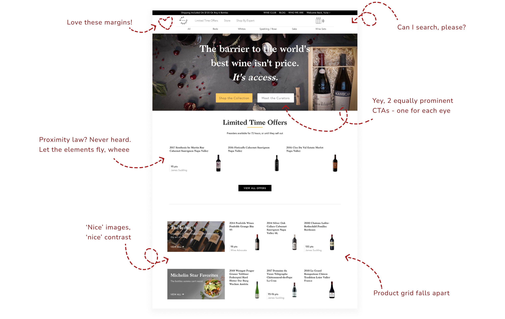

UX/UI design
Wine Access

This is a major rebranding and website redesign project for an online wine retailer Wine Access.
I was driving the restructuring and redesign process solo, and my responsibilities cover everything from brainstorming
and user research to crafting wireframes, userflow diagrams, visual elements, layouts, and photography..
My Role: Swiss army knife - UX/UI designer, user researcher, illustrator and
photographer.
Challenge
The old version of the Wine Access homepage had various UI issues, including inconsistent fonts and button styles, low contrast, and elements that seemed disconnected. More significantly, it suffered from multiple UX flow problems, causing frustration for users.
Solution
The wine industry has a rich history and culture,
which means design solution needs to follow certain rules and be familiar
to our audience. To achieve this, I incorporated industry standards into
our design system from the start, guiding all design choices.
This design system helped me create a consistent look and feel throughout
the Wine Access website. From updating the homepage to improving navigation,
simplifying product displays, enhancing product details, and creating brand assets,
every part of the website reflects our dedication to quality.
Style guide
Logo
Fonts
Buttons
Icons
New Homepage
To redesign the homepage for maximum user benefit, I closely analyzed user feedback and website usage data. This helped me understand users main pain points and preferences. As a result, I made significant structural changes to the new homepage:
Utilized a 12-column grid for responsive design across devices.
Introduced sticky navigation for easy access to store products
Added a highly requested search option
Implemented a hero carousel to focus users on specific topics
Included an easy sign-up for daily email offers
Featured weekly articles with unique content from our authors
Product Detail Page (PDP)
The challenge on a Product Detail Page (PDP) was to present comprehensive information about the wine being purchased. This involved displaying various criteria and complex details sought by wine enthusiasts and collectors, while also making it visually appealing, educational, and accessible to those less familiar with wine.
Mobile Version
Checkout
I revamped checkout process to make it easier and faster for users. The new design increased conversion rates and customer satisfaction.
Branding, illustrations and various design assets


Designed & developed by Yulia Chilikina